前言
报告中会用到代码框架图，框架图的约定如下：
采用draw.io绘制
OUTLINE
- 问题出发点
- 动态翻译器翻译过程的特点
- X86toMips处理系统调用的方法
- QEMU处理系统调用的方法
- 总结
2. X86toMips执行本地码
控制流图（首次执行） X86toMips是翻译一个TB然后执行一个TB
X86toMips是翻译一个TB然后执行一个TB
- 开始执行当前TB
- 保存当前TB上下文然后转到系统调用的helper函数
- 从helper函数返回当前TB且恢复上下文
- 当前TB执行完成，回到exec函数，寻找下一个TB
- 发现没有TB了，生成下一个TB（没有进行反汇编，也没有进行翻译）
- 开始执行下一个TB
所以有必要研究清楚QEMU处理系统调用的方法。
do_syscall框架图
* cpu_exec框架图

这里可以看出cpu_exec在执行TB，当遇到中断时就会返回中断号trapnr
，转到下面的switch语句中处理中断。
case 0x80为系统调用处理的case。
接下来就详细看看do_syscall和cpu_exec
do_syscall框架图
 QEMU在这里完成了对x86系统调用的模拟，包括了32/64ABI的转换问题。
QEMU在这里完成了对x86系统调用的模拟，包括了32/64ABI的转换问题。
cpu_exec框架图

这里有调用
sigsetjmp函数。
这里有调用
siglongjmp函数。

siglongjmp函数，在进行翻译时被放进了TB里。这个工作由tb_find完成。
2. QEMU指令翻译成本地码
tb_find框架图tb_gen_code框架图- QEMU翻译过程控制流图
tb_find框架图
和X86toMips相同，也是发现没有TB时再去生成新的TB。
tb_gen_code框架图
translate_insn类似于X86toMips里的translate_xxx函数。translate_insn是个庞大的switch语句，将x86汇编翻译成TCG。- 开始执行当前TB
- 转到系统调用的helper函数
- helper函数通过siglongjmp跳到cpu_exec
处理系统调用 ，然后寻找下一个TB - 发现没有TB了，生成下一个TB（进行反汇编且进行翻译）
- 开始执行下一个TB
X86toMips和QEMU对系统调用的区别（首次执行）
- 步骤3: X86toMips回TB，QEMU回cpu_exec
- syscall是否是TB结束的判定标志
X86toMips在helper里处理系统调用。 QEMU在cpu_exec处理系统调用。
X86toMips和QEMU对系统调用的区别（非首次执行）
TB已经都翻译好了。- X86toMips: 每次都只执行一个TB
- QEMU: 每次执行多个TB（直到遇到异常情况）

切换上下文的开销！所以在这个方面QEMU更好。
在系统调用是否有必要在cpu_exec里执行？
自修改代码，修改之后的TB块对应的内存代码。
相比X86toMips处理系统调用的方法， QEMU更好。